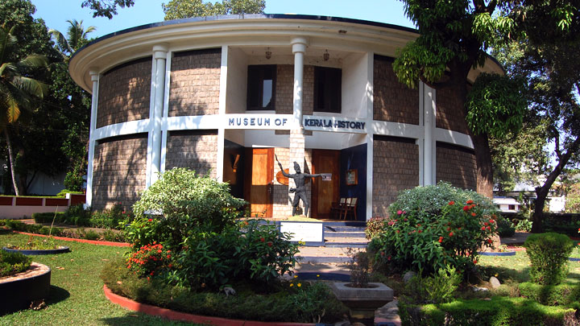

Museum Of Kerala History
Museum Of Kerala History will take you on mystical ride through Kerala’s rich past,present and even a glimpse of the future. You will
experience the stories of people and events that changed the fortunes of this lush land.In order to learn more about Kerala’s
significant contribution to the history of the region and the world,be sure to take a Museum Tour.

Rating:
4.2/5 stars
Entrance Fee:
Adult: Rs.150
Child: Rs. 50
Timings:
10 am to 5 pm
Tuesday to Sunday
Closed on Mondays
Contact:
Tel : +91 484 2541768, 4020506,4020509
Mob: +91 8129051880
Email : mnfoundationkochi@gmail.com
Website: www.keralamuseum.com
Address:
Kerala Museum
Pathadipalam
Edappally, Kochi - 682024
Getting there:
Nearest railway station: Ernakulam, about 11 km
Nearest airport: Cochin International Airport, about 21 km